Walter:
-
处理开盘时调控缺口，没有形成对昨天的线段破坏，就把这个缺口直接处理成前一个 k 线的延伸，就是前 一个 k 线 ，而不是把这个缺口分解成多根 k 线。
至于 108-109，带箭头那笔为什么不被算成一段？也就是 108-109 为什么不是三段？这很简单，因为段必须是至少三笔构成，缺口如果包含在一笔中的，像今天早上低开的缺口，没有破坏昨天那笔，是顺着昨天那笔下来的，所以这种缺口和一般的走势没什么区别， 缺口还是包含在昨天的一笔里。
-
突然性的逆着走势来的缺口，就像 530 那个，就必然要当成一段 ;
但有些突然性的逆着走势来的缺口，就像 530 那个，就必然要当成一段，而不能光当成一笔或一笔里的了 。有人可能说， 缺口没有三笔？那你可以这样去看，就像 0=0+0+0，缺口可以看成是三个缺口的迭加，这样就有三笔以上了 。还有，有位叫袖手旁观的网友理解得也不错， 线段必须要被破坏才算结束，但必须要强调的是， 线段必须要被线段破坏才算是真破坏，单纯的一笔是不能破坏线段的 ，这就避免了一些特偶然因数对走势的干扰。
-
背驰的比较首先是和前面通向的一笔／段比较。而后才有本笔 / 本段是否结束的笔／段内的细节判断。
-
在一分钟或者分时图中看 macd 是不需要看黄白线的人，大级别黄白线才有意义。 但是，如果是一个 5 分钟级别或者 30 分钟级别出现了小转大，比如 1 分钟级别的转折成 30 分钟，这个过程中，黄白线意义不大。
正文
现在的课已经越来越精细，特别用的是最小的 1 分钟，一般的理论，在这么精细、偶然性那么大的图上都要乱套了，但却恰好能显示本 ID 理论的有力。别说 1 分钟图，分笔图也没问题，这就是本 ID 理论所构筑几何结构的力量。世界都是几何的，别说那几张无聊的走势图了。
看下图，为什么下午的分段是这样？大概很少人现在就能全部搞清楚，所以，为了让各位能睡一个塌实觉，也为了免得等一下飞机万一不听话，到时候只留下各位在这里争论不休没人再给解答，所以本 ID 在去机场的路上用本本给各位补上一课。 106 到 107 这一段箭头所指的那一笔，用的是取整的前提 ( 底分型 )，所以，只要你仔细去分析，就知道那一定是一笔 ( 一个线段由三笔构成，106-107 出现了两个顶分型，两个底分型，共有三笔。中间的一笔符合 “ 新笔 ” 的定义，对于取整的问题，下面有一图清晰，两个 k 线在 3882.21 3882.18 取整后重合 )。
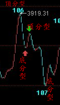
这个问题，本 ID 瞧了一下，见一位叫快乐 vs 菜虫的网友已说到。当然，你可能要问为什么一定要取整？这没有什么必然性，只是预设的前提，你可以采取严格到小数后两位的精确度，但其实不同软件，对 1 分钟这么精细的图，都会有数值上的细微差别，所以，所谓的精确，往往不一定就是，而在这么快速变动的市场中，数值有点细微差别，其实没什么不同，例如，还可以用这样的区别方式，就是两者相差 0.5 点内的看成是一样的。所有预设精度，唯一必须遵守的，就是精度一旦预设，就一定要一路保持。
注意，没有什么精度是十全十美的，例如用相差 0.5 内看成是相同的，那么如果是 0.51 呢？这和 0.49 也没有多大区别。所以这些细节，其实问题都不大，关键是要统一，不要变来变去。由于现在只是示范，为了方便各位学习，就一直继续采用取整的精度，各位可以根据自己的情况来调整。
至于 108-109，带箭头那笔为什么不被算成一段？也就是 108-109 为什么不是三段？这很简单，因为段必须是至少三笔构成，缺口如果包含在一笔中的，像今天早上低开的缺口，没有破坏昨天那笔，是顺着昨天那笔下来的，所以这种缺口和一般的走势没什么区别， 缺口还是包含在昨天的一笔里。 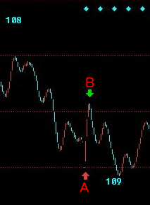 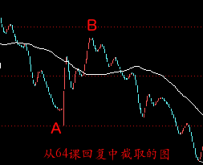
（A 处的缺口实际上是包含在昨天 106 的那一笔中，今天开盘价格出现跳空，AB 虽然形成一笔，但是单纯的一笔是无法破坏线段的。而从 64 课回复中截取的图，AB 是一个线段，可以破坏前面的线段。）
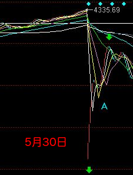 但有些突然性的逆着走势来的缺口，就像 530 那个，就必然要当成一段，而不能光当成一笔或一笔里的了 。有人可能说， 缺口没有三笔？那你可以这样去看，就像 0=0+0+0，缺口可以看成是三个缺口的迭加，这样就有三笔以上了 。还有，有位叫袖手旁观的网友理解得也不错， 线段必须要被破坏才算结束，但必须要强调的是，线段必须要被线段破坏才算是真破坏，单纯的一笔是不能破坏线段的 ，这就避免了一些特偶然因数对走势的干扰。
 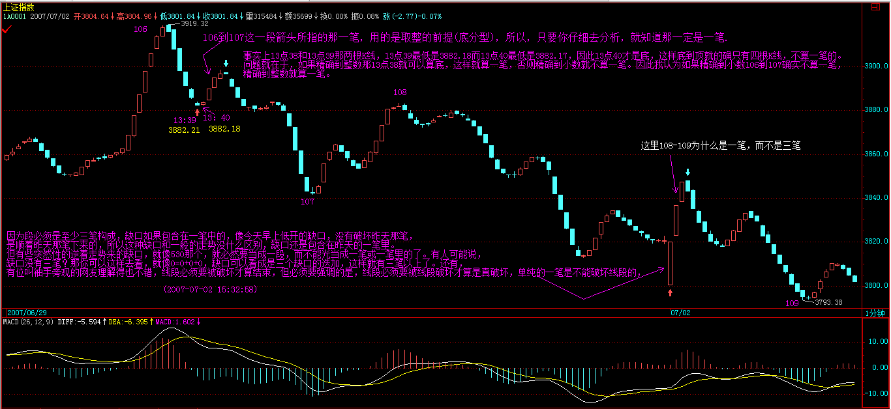
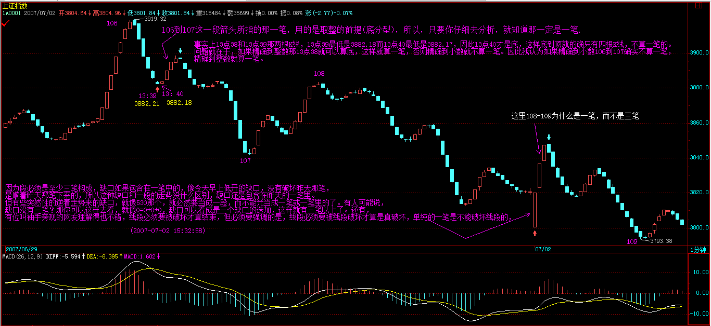
至于 110-111。红箭头那两个为什么不是最终精确定位的背驰点？这都是些以前就应该解决的简单问题。像第一个红箭头位置，第一次略微跌破 109 那位置，这时候把已经出现的面积和前面 108-109 的对应面积之和比，已经十分接近，也就是说 110-111，刚起跌，这力度已经和前面的 108-109 差不多，这恰好说明这一段的力度是很强的，不但不可能是对 108-109 背驰，而且站在中枢震荡的角度，这种力度，一定是小级别转大级别以时间换空间或与更大力度的对比产生的背驰才能化解的。后面这种情况，在这个实际的图形中，就是与前面 104-105 的下跌力度比。110-111 这段，相比较的，是 104-105 这段，中间的中枢震荡的中枢，是 105 到 110 这个。因此，这里根本不存在与 108-109 对比的问题。站在 105-107 这个中枢的角度，110 虽然不构成第三类卖点，但也极为接近，这种对中枢的离开，力度一般都很大 ，所以就算你搞不清楚和哪段比，也至少要等这段的结构被破坏，才有介入的可能，而后面，上下上的两次反抽，根本就没有破坏其结构，因此后面的破位下跌就是天经地义的。(105-110 是在一个中枢之中，110－111 作为中枢的离开段，应该和 104-105 这个中枢的进入段相比，而不是和 108-109 相比判定背驰。)
机场到了，先保存起来。
挺好玩的，帖子分两段写，中间过一安检。继续。
至于第二红箭头那个，就更不可能是了。绿箭头那次反抽，等于对前面破位前那上下上的微型类中枢（ 注意，站在严格意义上，线段以下是没有中枢的，所以说是类中 枢）的一个类第三类卖点，后面有两种变化，就是转大级别类中枢或类中枢移动直到形成新类中枢为止。而 下面的黄白线，是一个典型的下上下结构中的第二下刚破上的低点，这是力度最大的一下 ，怎么可能有背驰出现？MACD 第一个红箭头就指这大的下上下破的一下，这时候除非出现线段结构的突发性破坏，否则不可能有什么背驰出现。而后的回拉，其实刚好构成一 个奔走型的上下上结构（也就是第二上刚和第一上的低点稍微重合 ），这其实也就构成另一个微型类中枢。这和第一个红箭头指的那个一起，刚好构成两个类中枢的下跌走势。然后，后面的背驰判断就很简单了，和一般的趋势中背驰的判断一样。针对第二那奔走型的微型中枢的前后两段，MACD 两个红箭头对应的绿柱子的比较，一目了然。（ 千万别再问这时候为什么不看黄白线之类的问题，这类问题回答过 N 次了。）（ 级别太小，最小级别和分时不用看黄白线回拉 ）
请各位好好把各类情况消化好，特别一些最基本的知识，一定要掌握，62、63 课，要完全吃透，而且能当下应用。当然，这需要不断练习，不断研究不同的图形。
本 ID 就不再说什么了，准备登机。回到北京，也快第二天了。
先下，明天见。
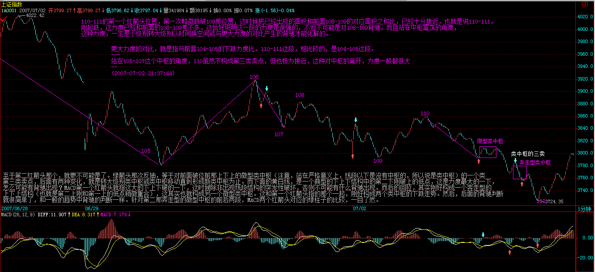
今日解盘：3919 颈线折磨你 (2007-07-03 15:30:02)
一回来，N 多的腐败活动，今晚又要看演出，所以只能粗略说说。今天的大盘，就是在这 N 天反复强调的 3919 颈线下进行的蓄势，现在，图形上头肩底的雏形已经基本按剧本构造完毕，但如果颈线突破不了，那还是白搞。现在，人心涣散，谋事能成的概率，当然没有前面的多了。现在，剧本中最好的情节，就是走三角形，这次上去是 D 段。但这次的把握性，比上次 B 段那次要差，剧本只能按每天一步步演，下面最关键的就是这颈线的突破与回抽确认，但现在人气涣散，最主要是现在有些人，不断放暗枪，特别那些等额度的，肯定不想上，希望走平台型，因此不断捣乱。而走三角形的，又不一定很团结，只能见一步走一步，但本 ID 会尽力的，能走到哪里算哪里。
有些市是必须逆着而为的。 (2007-07-04 15:45:01)
散户多是墙头草，但如果所有的中国人都成了墙头草，那么，中国金融市场等着被人宰割的日子就不远了。昨天已经说了，那些正在等额度的，都希望走平台型，3000 点下的时候，本 ID 也逆过一次市而为，当时博客都有部分记录，那次，这些汉奸与目前等额度的一批，希望从 3000 点下一直回到 2000 点下做一个大差价，但最终他们没有得逞。看看这里春节前后的帖子，就知道斗争的激烈。
这次，道理一样，那些等额度的，希望他们新增加的额度能够买到他们所谓符合投资价值的股票，而国内配合他们的，其他跟着他们的，都在暗地里使坏，这在昨天的解盘里已经说过。这时候，必须有人站出来，就像春节前 3000 点以下，那罗美国老头忽悠时，必须有人站出来。那次，本 ID 站出来了，这次也一样，现在的战役，就是不能让汉奸与等额度的人得逞，3000 点那次，汉奸和等额度的人大败，这次，条件更险恶，但有些事情是必须干的，就像上次在 3000 点下，本 ID 就说过，有些事只能北京人干，北京人就是牛 B，就像昨天在人民大会堂唱响国际歌。
技术上，压力惊人，但有些事情，就是要逆市而为。今天早上，两次的冲击，完全没有任何人跟进，所有的散户都落荒而逃，汉奸和等额度的不断犯坏，看看今天中石化等指标股上，再看看今天代表指标股的白线一直在黄线之下就知道了。但这次，汉奸和等额度的还是落空了，指数是跌了，但今天的游击战术还是成功了。
现在，就是要放弃指数，对所有有中长线价值的股票进行战略性建仓，让汉奸们、等额度的人，就算真打出平台型，也买不到好股票。整体上市、大重组、中小盘成长股票，都是可以游击战的领域，就让汉奸们去砸指标股好了，指标股不是不出手，而是要等待时机，时机一到，游击战就要转化为大兵团作战，就像 3000 点那次本 ID 演示的联通与中行一样。
对于散户来说，你们那些都是糊口的钱，没必须在这么血腥的斗争中坚持，就像八年抗战，在上海，不一样有很多面首活得很好？这样，抗战胜利不一样能分点好？这世界上，除了当汉奸，还可以当顺民，管他是日本人还是美国人。但本 ID 不可以，真正的北京人都不可以，本 ID 就是看不了汉奸和等额度的鬼子得逞，本 ID 的钱都不等着花，钱是留着买子弹，打鬼子和汉奸的。
现在的环境有什么可怕的，95 年那么凶横的环境下，一样能掀起一轮轰轰烈烈的重组行情，而带头的，还记得是哪里的股票吗？昨天，在人民大会堂可以唱响国际歌，在最凶险的走势中，一样可以唱响游击队之歌。
技术没什么可说的，颈线不能放量突破，图形自然受到破坏，大盘最坏的情况，就是进入缩量阴跌，散户的对策，本 ID 已经多次说过了，如果你没有技术、没有资金实力，那就半仓甚至空仓去当顺民，等待抗战胜利的机会然后再出来。
而对于有一定实力的资金，就选好目标，现在的股票也不过就 1000 来只，难道中国还没有 1000 多的游击队，在每个适合的股票上进行游击战？本 ID 已经选好目标了，你们呢？
好，不说了，没有资金实力的，就按技术来，唯一需要再次提醒的，就是要放大操作的级别，特别技术不太好的。
但，只要给本 ID 一个机会，反攻是必然的，在拉锯中消耗汉奸和鬼子，这就策略。
先下，后面还有一大堆事情等着，不能多说了，再见。
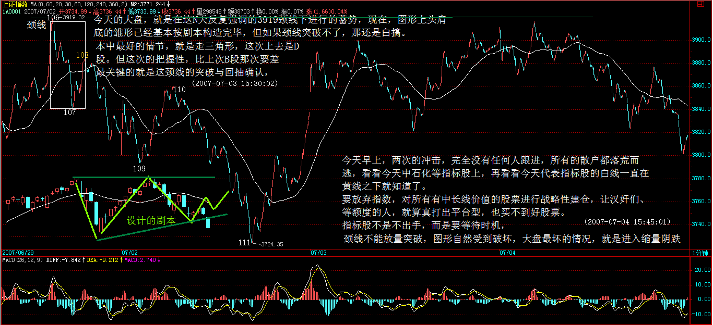
凭空接坠石，依然开弓没有回头箭 (2007-07-05 15:43:43)
所有的战役都不是一天能完成的，现在，进行的是一项不可能完成的任务，谁都知道，技术上周线刚破位，所以的技术指标与大的环境都不可能让这样的任务完成，但本 ID 既然这样选择了，就义无返顾。今天，是指标股被全面打压的一天。上下午两次的介入，同样 50 点的反弹，都以失败告终，但开弓没有回头箭，抗战必须坚持而且继续坚持，每一次的阻击，都是一次拉锯与消耗。没有正面的阻击，游击战争是开展不起来的。看看今天中石化等放出的量就知道了，虽然这是凭空接坠石，但必须接。而且，这也是以后需要的一些基本筹码。
今天的能量消耗不大，只属于试盘阶段，现在重点在三大领域，就是整体上市、大重组、中小成长股，这是与指数无关的。技术上，必须依靠年线，那些没有回到年线的股票，都不足以支持。但，这样的战役，靠一方力量是不足以完成的，像今天的两次反抽，最后都是因为没有呼应而夭折。但，明知道失败也要干，对技术指标上的战术准备，这两次反弹也是必要的。
但战争有其规律，不能莽撞，技术上，所有的因数都有利于汉奸与等额度的，但所有技术都是合力的结果，本 ID 站出来，而且将继续义无返顾地干下去，就是要改变着合力，这合力是由每个人组成的，这是一场成功率只有 1% 的战争，每多一份努力，都是值得的。而改变合力，最终都反映在某级别的买点上，本 ID 就是要在逐步的分级抵抗中，把大级别的买点给构造出来，这就是今后一段时间的任务。
好了，最终需要的工作太多，不能多说了，先下，再见。
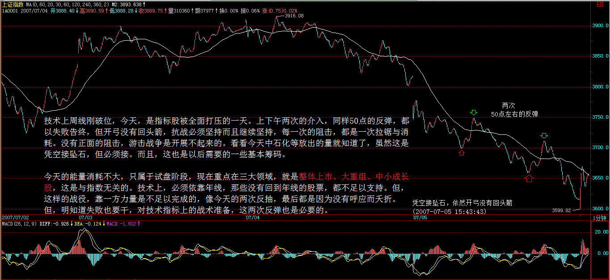 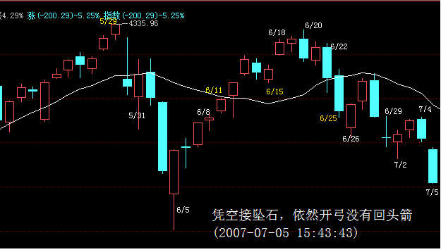
和散户网友说说现在的形势与任务 (2007-07-05 23:04:16)
首先，必须要明确，各位的状况和本 ID 有很多本质的不同。各位也知道，本 ID 6 月后就忙于 PE 的事情，可以很明确地说，本 ID 一部分资金已经分流到 PE 上去，也就是说，就算本 ID 这次大败，依然有翻身重来的机会，而且一定可以翻身重来。正因为有这样的背景，所以各位第一不用为本 ID 担心，第二必须知道，本 ID 这样干并不是不顾后果的意气之举，而是进退有度的。
其次，本 ID 必须在这时候站出来，败了，大不了当股东，哪天本 ID 心情不好，找一个面首收购了自己当大股东算了，当然，这就成了走唐家兄弟的老路，没什么意思。或者，再折腾几年，等本 ID 厌倦了，就不玩了，出来玩文化也很好。而各位并没有本 ID 如此自如的进退之路，所以，一定要量力而行。
因为本 ID 知道的太多，所以必须要干上这一仗，当然，这里不光是本 ID 自己的，本 ID 在市场上干过这么多事情，联合点人干点事，还是没问题的。站在纯技术的角度，这样干，绝对是脑子进水，但人，有时候脑子就是要进点水，特别当这事必须干时就更应义无返顾。本 ID 当然知道自己理论中耐心等待买点的道理，但站在实际层面，本 ID 必须追究，这个买点不能如 1000 点那样被汉奸了。站在纯技术的角度，本 ID 现在的所有行为都是错误的，正如站在所谓纯人性的角度，用胸口顶枪口肯定是有病的，但人，有时候就是要病上一病。
但对于一般的散户，完全没必要参与这种活动，各位应该利用市场机会去壮大自己，没必要干用胸口顶枪口的傻事。对于各位来说，根本不需要知道这市场的买卖点是如何合力构成的，你们只需要知道合力的结果，根据结果进行操作。
目前的技术形态，站在最恶劣的角度，如果是对整轮行情的一个中级调整，比较极端的幅度是 2/3，也就是说，调整到 2100 点也是毫不奇怪的，所以，没必要有任何站岗的无聊思想。学了本 ID 的理论，唯一需要坚持的就是根据自己操作级别，买点买，卖点卖。等各位有这个能力后，才学本 ID 如此一病吧。
市场就是战场，一旦开战，在战场上，就是无情的，本 ID 只考虑如何去夺取战争的主动权，这里，一切手法都可以用上，本 ID 不希望在打仗时有什么顾虑，在战场上，分不清什么散户、机构。而且本 ID 这次战役的目标，也不是当什么解放军，只是要打乱某些人的节奏，让某些人的目的不能得逞。如果一定要硬加上一个解放军的任务，只能是两头不着边。解放军只能是一个顺带的任务，而不是战役的前提。所以这盆冷水，本 ID 是一定要泼的，本 ID 从来都实话实说，不想让人有任何不切实际的误解。
对于散户来说，市场中的真正的解放军，只能是你自己，你要掌握好技术，要对股市有充分的理解，要明白股票都是废纸，要知道，股票只是抽血的凭证。然后，放下一切幻想，如果有可能就学好本 ID 的理论，看图作业，这才是散户战胜市场之道，只有自己壮大了，才是对汉奸和鬼子最大的打击。而本 ID 有这个能力，当然需要更多的承担，这必须要分清楚。
本 ID 这次的任务，不是原来那 16 只股票可以完成的（这些股票，中长线的角度依然会关照的，对他们，都是保持 0 成本增加筹码的阶段），本 ID 现在正在开辟新的战场，介入一些对股市更有影响的品种，大致方向本 ID 已经说了，就是 整体上市（包括中字头）的、大重组（包括老树发新枝那种）、中小成长。技术上，都是有年线可以依托的 。本 ID 不可能去接什么基金、甚至汉奸的高位股票，那真有病了。但像中石化、联通等指标股，当然是需要慢慢控制的，否则，就没有话语权了。逐步，将慢慢掀起整体上市、大重组、中小成长的行情，把整个不利的局面扭转过来。
现在，要把人心扭转，不是一天半天的事情，必须有股票，逐步走出有号召力的行情来，才会得到市场的响应。当然，这市场不是本 ID 的，其他有实力的，如果都能选择好攻击对象，为市场的稳定和对汉奸的阻击给出自己的贡献，那么本 ID 的星火最终就可以燎原。而市场好了，解放军自然就来了，这才是根本之道。
光有热血，当义和团，是打不赢汉奸鬼子的。先下，再见。
以黄河名字展开的绝地反击 (2007-07-06 15:50:50)
具体的盘中事情，各位就没必要知道了，各位只需要知道结果，而结果是什么，已经永远刻在中国证券历史的 K 线图上。当然，如果要学技术，要当猎鲸者的，请好好去研究一下，从昨天凭空接坠石的两波反抽，到今天早上一开始的急拉，到后面的下跌，是如何构筑一个良好的技术反攻图形的，例如可以看看 5 分钟图，是如何用钱把这个底背驰给构造出来的。本 ID 也不能违反本 ID 的理论，就像牛顿也不能让苹果尽往天上飞。 大的技术形态上，依然有利于某些人，所以，一切并不会因为一根阳包阴就天下太平，这就当是平型关一战吧，但已足以向某些人表明最基本的态度了，特别在这样一个特殊的日子里。
对于散户来说，一定要坚持按自己的级别买点买、卖点卖，这样才是取胜之道。特别在这种震荡市中，一定要把握好节奏。
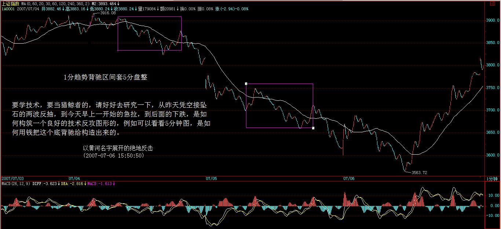 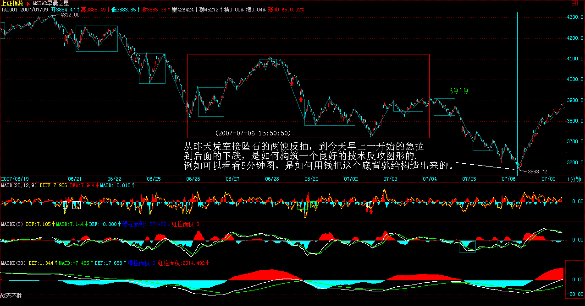 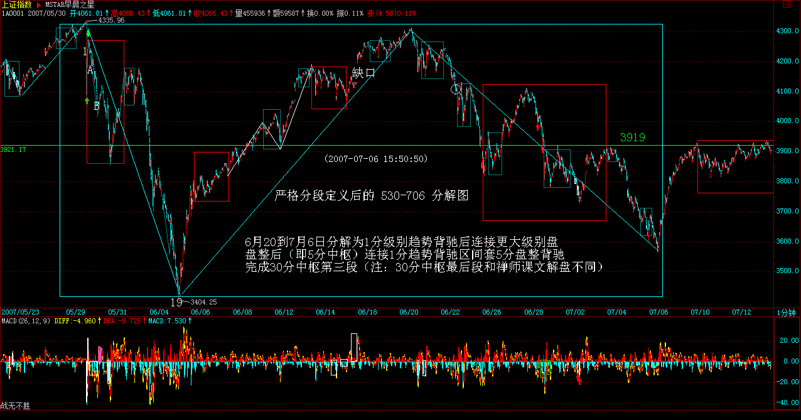 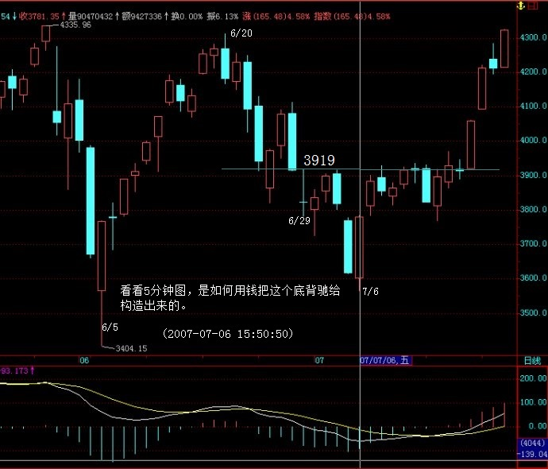